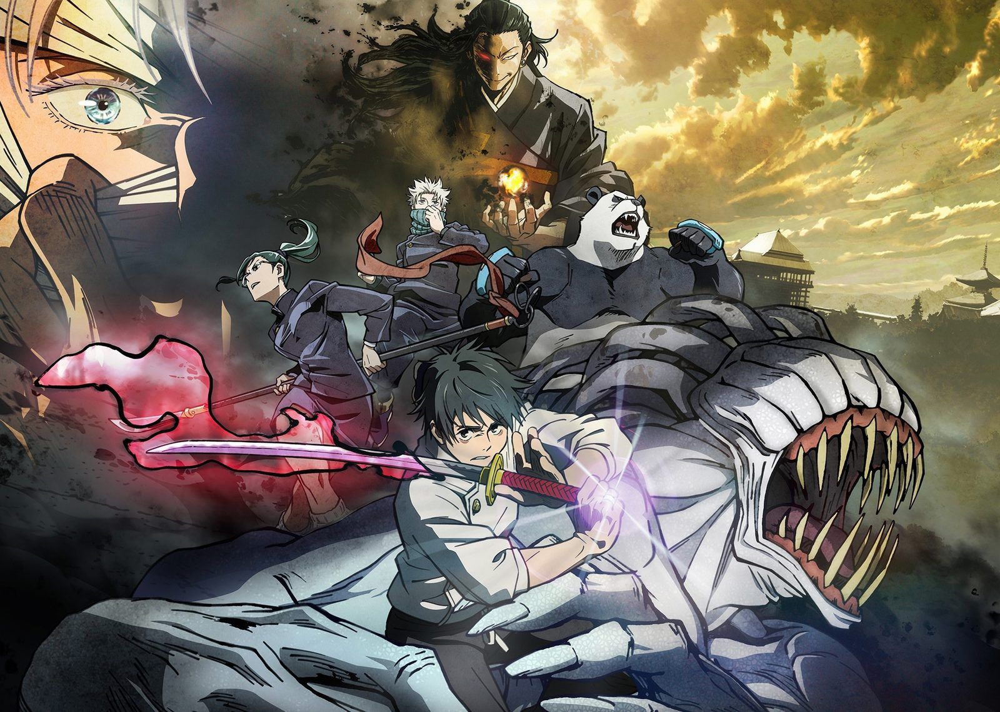

Магическая битва 0


Юту Оккоцу преследует призрак его подруги детства, которая погибла в ДТП. Однако она вовсе не та милая девушка, какой была до смерти, а чудовищное и агрессивное существо, которое парень не в силах контролировать. Поэтому, когда Юту хватают маги, парень радуется, что больше никто не пострадает. Задержавший его мастер Сатору Годзё убеждает юношу поступить в школу магии, чтобы тот научился управлять Рикой и помогать людям. Однако вскоре Юта узнает, что злые духи — не самое опасное, что есть в мире.